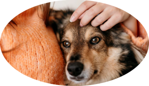
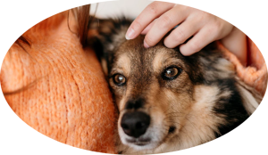

Adote um amigo
Abra o coração e estenda seus braços, adote um amor!
Por que adotar:
Você salva a vida de um animal e ele ganha um lar novo
Garante um companheiro em todos os momentos
Diminui o número de animais abandonados
 

São milhares de animais abandonados a procura de um lar, aqui você pode encontrar alguns deles. No Brasil,são 30 milhões de pets abandonados, entre cães e gatos, um número alarmante e desesperador, por isso estamos aqui, queremos ajudar Ongs e Protetores Independentes nessa árdua luta da causa animal.